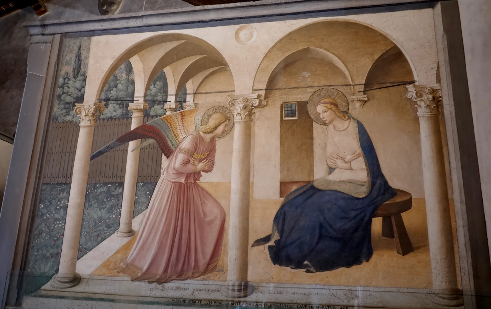
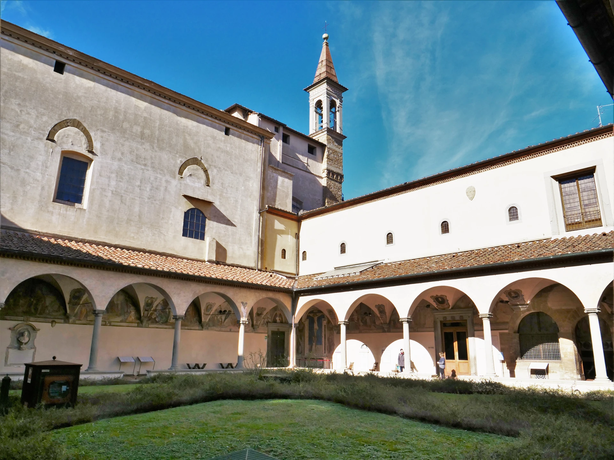
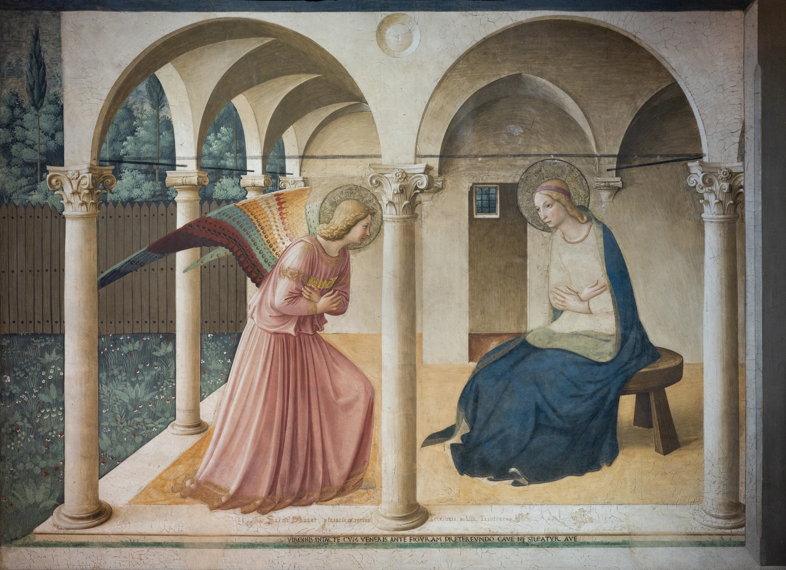
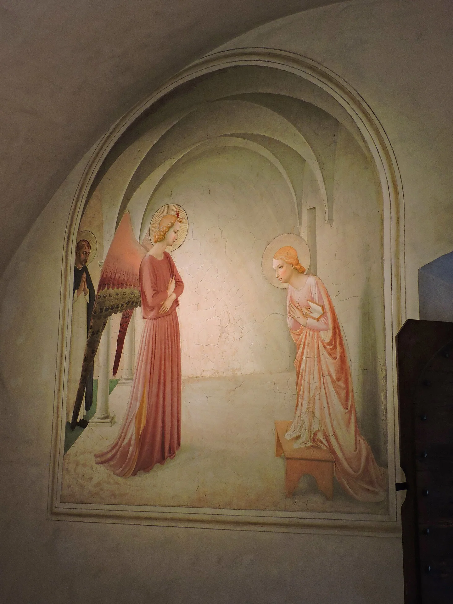
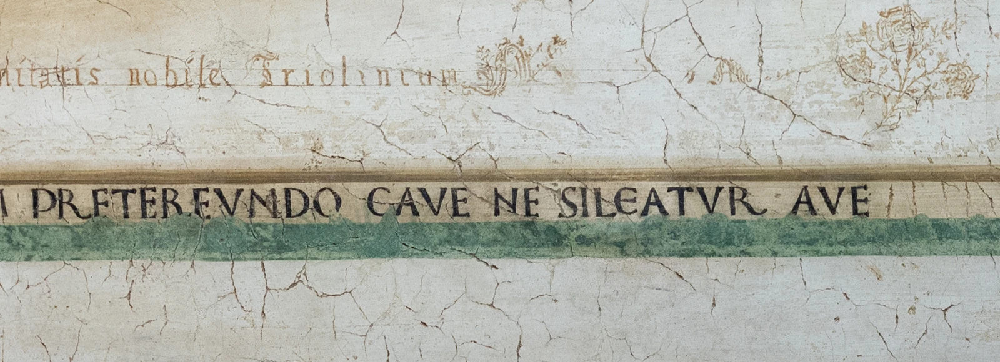
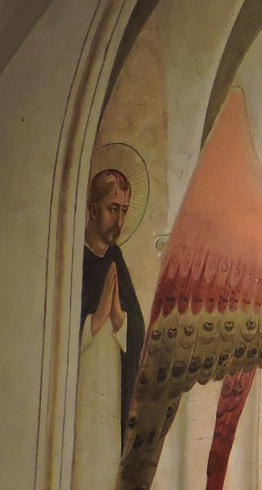

아직 펼치지 않은 카드성탄을 기다리는 날들 · 5산 마르코 수도원의 「수태고지」천사와 마리아, 두 사람 모두 두 팔을 가슴에 모았어요. 어떤 이야기를 나누고 있을까요?천사가 마리아에게 깜짝 소식을 전하러 왔어. 무슨 소식일까?
1440~1445년 무렵이탈리아 피렌체 · 산 마르코 수도원 2층
산 마르코 수도원의 「수태고지」
피렌체 산 마르코(San Marco) 수도원의 계단을 끝까지 오르면, 맞은편 벽에서 이 그림이 맨 먼저 맞아 줘요. 「수태고지」는 천사 가브리엘이 마리아에게, 아들 예수를 낳게 된다고 알린 일(누가복음 1장)을 그린 그림이에요. 이곳 수사(가난을 서약하고 수도회에 들어간 남자 수도자)들은 숙소에 들어설 때 무릎을 굽혀 마리아에게 ‘아베’(천사가 마리아에게 건넨 라틴어 첫 인사) 하고 인사했어요. 그림 속 가브리엘과 같은 몸짓이었어요. 그림 앞에 멈춰 서서, 작은 것들을 하나씩 찾아보세요.
수도원 계단을 끝까지 올라가면 커다란 그림이 짠 나타나. 수사님들은 그 앞에서 살짝 무릎을 굽혀 인사했대. 그림 속 천사처럼! 우리도 그림을 하나씩 살펴볼까?
검수 전 시안이에요(기준서 1판). 그림 풀이는 누가 그렇게 보는지 밝혔고, 상상은 ‘눈 감고 상상해 보기’에만 썼어요.
시안 확인용카드 단계 미리 보기
1
수사들만 오르던 2층
피렌체 산 마르코 수도원의 안뜰이에요. 도미니코회(성 도미니코가 세운 수도회) 수사들이 살던 이 수도원에서, 2층 숙소는 바깥사람이 들어오지 못하는, 수도원에서 가장 사적인 공간이었어요.
옥스퍼드 미술 사전 「그로브 아트 온라인(Grove Art Online)」은, 15세기에는 도미니코회와 프란치스코회(아시시의 성 프란치스코가 세운 수도회) 수사만 이 수도회의 숙소에 들어갈 수 있었다고 적어요. 수사들은 아래층에서 계단을 올라 숙소로 갔어요.

여기는 수도원 안뜰이야. 2층 숙소에는 수사님들만 올라갈 수 있었대.
물어보기수사님들의 방은 어떻게 생겼을까?
2
계단 끝에서 맞는 그림
계단을 다 오르면, 맞은편 벽에서 이 그림이 맨 먼저 맞아 줘요. 그로브 사전은 이 그림을, 수도원에서 가장 사적인 공간에 들어서는 사람을 처음 맞이하는 그림이라고 설명해요.
그림은 높이 2.3미터, 너비 3.21미터예요. 이 수도원의 도미니코회 수사였던 화가 프라 안젤리코(Fra Angelico)가, 갓 바른 회벽에 물에 갠 물감으로 그리는 벽화(프레스코)로 그렸어요.
계단 끝에 올라가면 이렇게 큰 그림이 기다리고 있어!
물어보기계단 끝에서 이 그림을 처음 보면 어떤 기분일까?
3
그림 앞에서, 아베
도미니코회 수사들은 숙소에 들어설 때, 마리아에게 천사의 인사인 ‘아베 마리아’(성모송, 천사의 인사로 시작하는 가톨릭교회의 기도)를 바치는 관습이 있었어요. 그 인사는 무릎을 굽히며 했어요. 그림 속 가브리엘처럼요.
그로브 사전은 그래서 이 그림이, 그림과 그 앞에 선 사람을 떼어 놓을 수 없게 이어 주었다고 설명해요. 그림 속 천사와 그림 앞의 수사가 같은 몸짓으로 같은 인사를 하게 된 거예요.
계단 끝, 그림 앞에 멈춰 섰어요. 그림 속 작은 것들을 하나씩 눌러 보세요.

프라 안젤리코, 「수태고지」, 1440~1445년 무렵, 피렌체 산 마르코 수도원 2층 북쪽 복도 · 그림: 프라 안젤리코 · 사진: Gleb Simonov · 퍼블릭 도메인 · 위키미디어 공용
그림 위의 숫자나 아래 번호를 눌러 보세요.
다 찾았어요. 수사들은 숙소에 들어설 때마다 이 그림 앞에서 멈춰 인사했어요.
“티 없는 동정녀의 그림 앞에 오거든, 지나가며 ‘아베’ 하기를 잊지 마라.”
그림 맨 아래의 라틴어 글 · 이 안내서가 우리말로 옮김 · ‘동정녀’는 처녀 마리아를 높여 부르는 말
수사들은 숙소에 들어설 때마다 멈춰 인사했어요. 나는 하루 중 어디에서 잠깐 멈춰 볼까요?
수사님들은 이 그림 앞에서 살짝 무릎을 굽혀 “아베!” 하고 인사했대. 그림 속 천사처럼!
물어보기천사랑 마리아, 둘 다 팔을 어떻게 하고 있어?
4
수사의 방 안에서
같은 층 3번 방에도 프라 안젤리코의 「수태고지」가 있어요. 그로브 사전은 여기서 마리아가 집이 아니라, 이 그림이 그려진 수사의 방만큼이나 소박한 방에 있다고 설명해요.
여기서는 가브리엘이 꼿꼿이 서 있고, 마리아가 낮은 걸상에 무릎을 꿇었어요. 왼쪽 가장자리에는 13세기 도미니코회 수사였던 성 베드로 순교자(San Pietro Martire)가 두 손을 모으고 있어요. ‘순교자’는 믿음 때문에 죽임을 당한 사람을 부르는 말이에요.

그로브 사전은 계단 끝 그림과 똑같은 뜻이 방 안의 그림들에도 담겼다고 설명해요. 그림과 그 앞에서 기도하는 사람을 하나로 잇는 뜻이에요.
수사님 방 안에도 같은 이야기가 그려져 있어. 왼쪽에서 한 수사님이 두 손을 모으고 있어.
물어보기내 방 벽에 그림 하나를 그린다면, 어떤 그림이면 좋겠어?
눈 감고 상상해 보기
계단을 한 칸씩 오를 때마다 발소리가 울려요. 마지막 칸에 올라서자 맞은편 벽에 부드러운 빛깔이 나타나요. 숨을 고르고, 무릎을 살짝 굽혀요. 아베, 마리아.
눈을 감아 봐. 계단을 하나, 둘, 셋 올라가. 짠! 커다란 그림이 보여. 살짝 무릎을 굽혀 인사해 볼까?
나의 자리
마리아는 뜻밖의 소식에 ‘네’ 하고 답했어요. 나에게 온 뜻밖의 소식에, 나는 어떻게 답하고 있나요?
누가 깜짝 소식을 전해 주면, 너는 어떻게 대답해?
마음에 닿는 한 줄을 고르거나 직접 써 보세요. 한 줄을 남기면 이 자리의 도장이 찍혀요. 이 기기에만 저장돼요.
더 깊이
이야기를 보다 궁금해질 만한 것들이에요. 답을 읽거나 짧은 영화로 보세요.

‘아베’는 무슨 뜻이에요?

3번 방 기둥 뒤의 수사는 누구예요?
뒷이야기
아직 펼치지 않은 이야기예요. 누르면 이야기가 펼쳐지고 색이 돌아와요. 더 알고 싶으면 근거를 따라가 보세요.
다 펼치면, 다음에 오실 때 새 이야기가 찾아와요.
오늘의 뒷이야기는 여기까지예요. 다음에 오시면 새 이야기가 기다리고 있어요.
펼친 뒷이야기 · 누르면 다시 볼 수 있어요
더 찾아보기
기록마다 다른 점
언제 그렸나 그로브 사전은 1440~1445년 무렵, 크리스천 아이코노그래피는 1442~43년으로 적어요.
3번 방의 그림 그로브 사전을 실은 이미지 자료(아키비전)는 1440~1442년 무렵으로, 위키미디어 공용의 한 사진 설명은 1438~40년 무렵으로 적어요.
함께 읽는 말씀
말씀은 뜻만 옮기고, 본문은 대한성서공회 개역개정으로 이어 드려요.
누가복음 1장 28절 천사가 마리아에게 와서, 은혜를 받은 사람이라 부르며 인사해요. 라틴어 성경(불가타)에서 이 인사는 ‘아베(Ave)’로 시작해요.
아가 4장 12절 사랑하는 신부를 잠가 둔 동산, 봉해 둔 샘에 빗대는 구절이에요. 라틴어 성경의 이 구절에서 ‘닫힌 정원(hortus conclusus)’이라는 말이 나왔고, 이 말은 뒤에 마리아를 부르는 이름이자 상징으로 쓰였어요.
그림 속 다섯 곳 금박
그림 속 다섯 곳을 모두 찾아 읽으면 카드에 금박이 입혀져요.
그림 속 다섯 곳을 모두 찾아 읽기
멈춰 서는 자리 채색
둘 가운데 하나만 해도 카드가 채색돼요.
하루 중 잠깐 멈춰 인사할 곳 고르기
아이와 함께 ‘영화처럼 보기’를 끝까지 보기
근거 보기 (18)
- 그로브 아트 온라인(아키비전 이미지 자료에 실린 설명): 계단 맞은편 「수태고지」 — 가장 안쪽 공간에서 처음 맞이하는 그림, 15세기 숙소 출입, 숙소에 들어설 때 무릎을 굽혀 아베, 가브리엘과 같은 몸짓, 방 안 그림도 같은 뜻, 1440~1445년 무렵, 230×321cm
- 그로브 아트 온라인(아키비전 이미지 자료에 실린 설명): 3번 방 「수태고지」 — 왼쪽의 성 베드로 순교자, 소박한 방의 마리아, 13세기 도미니코회 규칙, 프라 안젤리코가 거의 혼자 그린 방(3·6·7·9·10), 1440~1442년 무렵
- Christian Iconography(리처드 스트랙): 프라 안젤리코 「수태고지」 — 1442~43, 230×321cm, 2층 북쪽 복도, 여러 빛깔 날개, 두 라틴어 글과 뜻, 생 빅토르의 아담(1146년 사망)의 성모 탄생 축일 찬가
- 브리태니커 백과사전: Fra Angelico — 도미니코회 수사가 됨, 피렌체 산 마르코 수도원에 들어감, 복도의 「수태고지」
- 브리태니커 백과사전: fresco painting — 갓 바른 회벽에 물에 갠 물감으로 그리는 방법
- 대한성서공회 개역개정: 누가복음 1장 · 아가 4장
- 라틴어 성경(불가타) 누가복음 1장 28절: ‘Ave gratia plena’
- 브리태니커: Annunciation — 천사 가브리엘이 처녀 마리아에게 성령으로 아들을 잉태해 예수라 부르게 된다고 알린 일(누가복음 1:26~38), 3월 25일 축일(성탄 아홉 달 전)
- 브리태니커: friar — 가난을 서약한 가톨릭 탁발 수도회의 남자 수도자
- 브리태니커: Dominican — 성 도미니코가 세운 수도회(설교자회)
- 브리태니커: Franciscan — 아시시의 성 프란치스코가 13세기 초에 세운 수도회
- 브리태니커: Hail Mary — 가톨릭교회의 주요 기도, 첫 부분은 가브리엘의 인사(누가복음 1:28)
- 브리태니커: Trinity — 아버지·아들·성령이 세 위격으로 한 하나님
- 브리태니커: Saint Peter Martyr — 1205년 무렵 베로나에서 태어난 도미니코회 설교자, 1252년 밀라노 가까이에서 습격을 받아 숨짐, 1253년 성인으로 선포
- 영어 위키백과: Annunciation (Fra Angelico, San Marco) — 길잡이로만(윌리엄 후드: 계단 꼭대기, 어둑한 빛, 팔 모은 몸짓의 풀이, 울타리와 창 너머의 닫힌 정원)
- 영어 위키백과: Hortus conclusus — 길잡이로만(불가타 아가 4:12에서 온 말, 마리아를 부르는 이름이자 상징)
- 영어 위키백과: Peter of Verona — 길잡이로만(13세기 이탈리아의 도미니코회 수사, 성 베드로 순교자)
- 위키미디어 공용: 3번 방 「수태고지」(성 베드로 순교자와 함께, 1438~40년 무렵) 사진 설명
그림·사진·소리 출처
- 그림: 프라 안젤리코 · 사진: Gleb Simonov · 퍼블릭 도메인 · 위키미디어 공용
- 사진: Barnos · CC BY-SA 4.0 · 위키미디어 공용
- 사진: Dimitris Kamaras · CC BY 2.0 · 위키미디어 공용
- 그림: 프라 안젤리코 · 사진: Gleb Simonov · 퍼블릭 도메인 · 위키미디어 공용 · 일부 잘라 씀
- 그림: 프라 안젤리코 · 사진: Gleb Simonov · 퍼블릭 도메인 · 위키미디어 공용 · 일부 잘라 씀
- 그림: 프라 안젤리코 · 사진: Gleb Simonov · 퍼블릭 도메인 · 위키미디어 공용 · 일부 잘라 씀
- 그림: 프라 안젤리코 · 사진: Gleb Simonov · 퍼블릭 도메인 · 위키미디어 공용 · 일부 잘라 씀
- 사진: Dimitris Kamaras · CC BY 2.0 · 위키미디어 공용 · 일부 잘라 씀
- 사진: Richard Mortel · CC BY 2.0 · 위키미디어 공용
‘처음 만나는 기독교 문화’의 깊은 카드예요. 사람 얼굴이 알아볼 만큼 나오는 사진은 쓰지 않았어요. 카드 단계와 남긴 글은 이 기기에만 저장돼요.